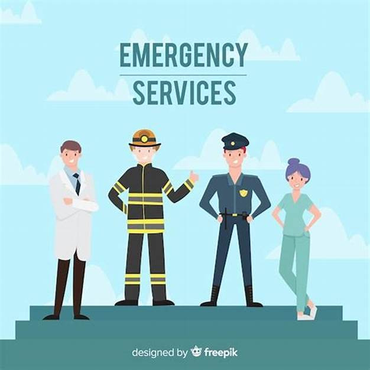

In times of crisis, every second counts. Our dedicated emergency response team is available 24/7 to provide immediate assistance. Whether it's a medical emergency, natural disaster, fire, or any other urgent situation, we ensure rapid action and support to safeguard lives and property.
Our Services Include:
Medical Emergency Assistance: Ambulance services and first aid support.
Disaster Response: Coordination during floods, earthquakes, and other calamities.
Fire and Safety: Firefighting units and evacuation protocols.
Helpline Support: A toll-free number to connect with our team instantly.
Together, we can save lives and create a safer community
About Us
About Us
At [Your Organization Name], we are committed to being a lifeline in times of need. Established in [Year], our mission is to provide rapid, reliable, and compassionate emergency assistance to individuals and communities during critical moments.
We specialize in delivering a comprehensive range of services, including medical aid, disaster relief, fire safety, and crisis management. Our team of skilled professionals and volunteers work tirelessly around the clock, equipped with advanced tools and resources to ensure that no call for help goes unanswered.
Why Choose Us?
24/7 availability for immediate response.
Experienced and trained personnel dedicated to saving lives.
A network of modern ambulances, fire engines, and support vehicles.
Strong partnerships with local authorities and community organizations.
We believe that preparedness and collaboration are the keys to a safer world. Together, we strive to build resilient communities and make every second count in the face of emergencies.
Your safety is our priority

Our Services
1. Medical Emergency Response
24/7 ambulance services with trained paramedics.
First aid and life-saving support during critical situations.
On-site medical camps for large-scale events or disasters.
2. Fire and Rescue Operations
Rapid response to fire outbreaks and related incidents.
Equipped fire engines and trained personnel for effective containment.
Evacuation assistance to ensure the safety of affected individuals.
3. Disaster Relief and Recovery
Immediate response to natural disasters like floods, earthquakes, and storms.
Shelter, food, and medical aid distribution in affected areas.
Long-term recovery support for rebuilding lives and communities.
4. Emergency Helpline and Support
A dedicated 24/7 helpline for immediate assistance.
Guidance and coordination during crises.
Connection with relevant authorities for specialized support.
5. Community Preparedness and Training
First aid and safety training programs for individuals and organizations.
Awareness campaigns on disaster preparedness and response.
Drills and workshops to build community resilience.
When emergencies arise, trust us to deliver the help you need. With our dedicated team and advanced resources, we ensure you’re never alone in a time of crisis.